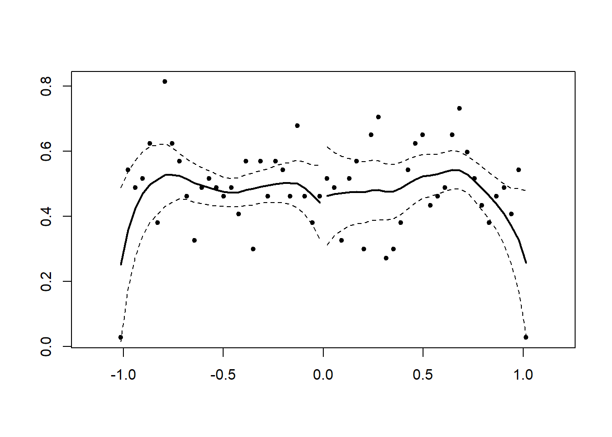
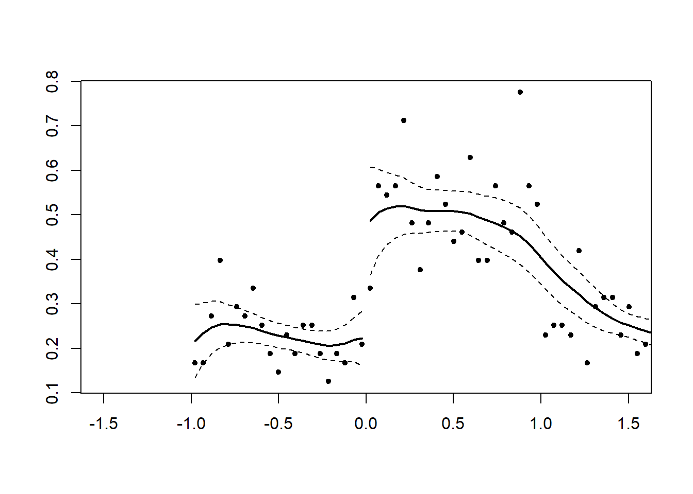
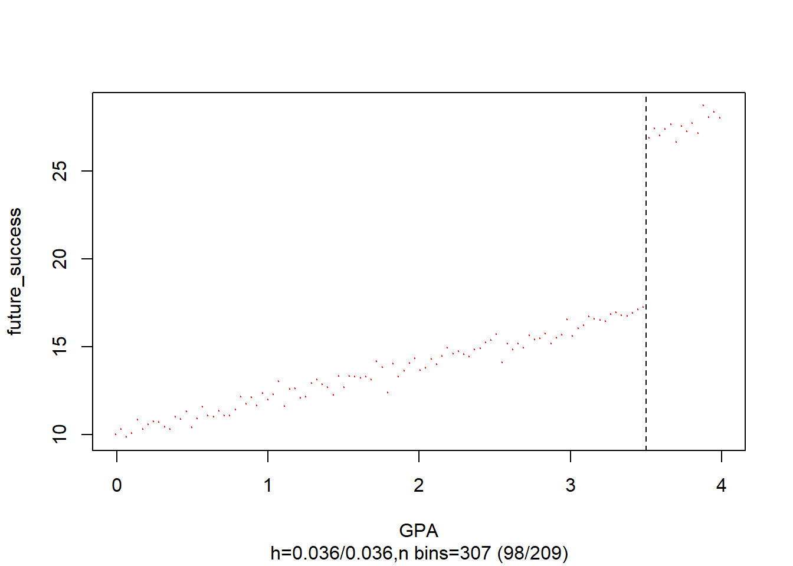

20.1 Regression Discontinuity
A regression discontinuity occurs when there is a discrete change (jump) in treatment likelihood in the distribution of a continuous (or roughly continuous) variable (i.e., running/forcing/assignment variable).
- Running variable can also be time, but the argument for time to be continuous is hard to argue because usually we do not see increment of time (e.g., quarterly or annual data). Unless we have minute or hour data, then we might be able to argue for it.
Review paper (Imbens and Lemieux 2007; D. S. Lee and Lemieux 2010)
Other readings:
RD is a localized experiment at the cutoff point
- Hence, we always have to qualify (perfunctory) our statement in research articles that “our research might not generalize to beyond the bandwidth.”
In reality, RD and experimental (from random assignment) estimates are very similar ((Chaplin et al. 2018; Bertanha and Imbens 2014); Mathematica ). But still, it’s hard to prove empirically for every context (there might be future study that finds a huge difference between local estimate - causal - and overall estimate - random assignment.
Threats: only valid near threshold: inference at threshold is valid on average. Interestingly, random experiment showed the validity already.
Tradeoff between efficiency and bias
Regression discontinuity is under the framework of \[Instrumental Variable\]
The hard part is to find a setting that can apply, but once you find one, it’s easy to apply
We can also have multiple cutoff lines. However, for each cutoff line, there can only be one breakup point
RD can have multiple coinciding effects (i.e., joint distribution or bundled treatment), then RD effect in this case would be the joint effect.
As the running variable becomes more discrete your framework should be Interrupted Time Series, but more granular levels you can use RD. When you have infinite data (or substantially large) the two frameworks are identical. RD is always better than Interrupted Time Series
There are several types of Regression Discontinuity:
Sharp RD: Change in treatment probability at the cutoff point is 1
- Kink design: Instead of a discontinuity in the level of running variable, we have a discontinuity in the slope of the function (while the function/level can remain continuous) (Nielsen, Sørensen, and Taber 2010). See (Böckerman, Kanninen, and Suoniemi 2018) for application, and (Card et al. 2012; Card et al. 2015) for theory.
Fuzzy RD: Change in treatment probability less than 1
Consider
\[ D_i = 1_{X_i > c} \]
\[ D_i = \begin{cases} D_i = 1 \text{ if } X_i > C \\ D_i = 0 \text{ if } X_i < C \end{cases} \]
where
\(D_i\) = treatment effect
\(X_i\) = score variable (continuous)
\(c\) = cutoff point
Identifying assumption of RD:
\[ \begin{aligned} \alpha_{SRDD} &= E[Y_{1i} - Y_{0i} | X_i = c] \\ &= E[Y_{1i}|X_i = c] - E[Y_{0i}|X_i = c]\\ &= \lim_{x \to c^+} E[Y_{1i}|X_i = c] - \lim_{x \to c^=} E[Y_{0i}|X_i = c] \end{aligned} \]
RDD estimates the local average treatment effect (LATE), at the cutoff point which is not at the individual or population levels.
Since researchers typically care more about the internal validity, than external validity, localness affects only external validity.
Assumptions:
Independent assignment
Continuity of conditional regression functions
- \(E[Y(0)|X=x]\) and \(E[Y(1)|X=x]\) are continuous in x.
RD is valid if cutpoint is exogenous (i.e., no endogenous selection) and running variable is not manipulable
Only treatment(s) (e.g., could be joint distribution of multiple treatments) cause discontinuity or jump in the outcome variable
All other factors are smooth through the cutoff (i.e., threshold) value. (we can also test this assumption by seeing no discontinuity in other factors).
Threats to RD
Variables (other than treatment) change discontinously at the cutoff
- We can test for jumps in these variables (including pre-treatment outcome)
Multiple discontinuities for the assignment variable
Manipulation of the assignment variable
- At the cutoff point, check for continuity in the density of the assignment variable.
20.1.1 Specification Checks
20.1.1.1 Balance Checks
Also known as checking for Discontinuities in Average Covariates
Null Hypothesis: The average effect of covariates on pseudo outcomes (i.e., those qualitatively cannot be affected by the treatment) is 0.
If this hypothesis is rejected, you better have a good reason to why because it can cast serious doubt on your RD design.
20.1.1.2 Sorting/Bunching/Manipulation
Also known as checking for A Discontinuity in the Distribution of the Forcing Variable
Also known as clustering or density test
Formal test is McCrary sorting test (McCrary 2008) or (Cattaneo, Jansson, and Ma 2019)
Since human subjects can manipulate the running variable to be just above or below the cutoff (assuming that the running variable is manipulable), especially when the cutoff point is known in advance for all subjects, this can result in a discontinuity in the distribution of the running variable at the cutoff (i.e., we will see “bunching” behavior right before or after the cutoff)>
People would like to sort into treatment if it’s desirable. The density of the running variable would be 0 just below the threshold
People would like to be out of treatment if it’s undesirable
(McCrary 2008) proposes a density test (i.e., a formal test for manipulation of the assignment variable).
\(H_0\): The continuity of the density of the running variable (i.e., the covariate that underlies the assignment at the discontinuity point)
\(H_a\): A jump in the density function at that point
Even though it’s not a requirement that the density of the running must be continuous at the cutoff, but a discontinuity can suggest manipulations.
(D. Lee and Lemieux 2009) offers a guide to know when you should warrant the manipulation
Usually it’s better to know your research design inside out so that you can suspect any manipulation attempts.
- We would suspect the direction of the manipulation. And typically, it’s one-way manipulation. In cases where we might have both ways, theoretically they would cancel each other out.
We could also observe partial manipulation in reality (e.g., when subjects can only imperfectly manipulate). But typically, as we treat it like fuzzy RD, we would not have identification problems. But complete manipulation would lead to serious identification issues.
Remember: even in cases where we fail to reject the null hypothesis for the density test, we could not rule out completely that identification problem exists (just like any other hypotheses)
Bunching happens when people self-select to a specific value in the range of a variable (e.g., key policy thresholds).
Review paper (Kleven 2016)
This test can only detect manipulation that changes the distribution of the running variable. If you can choose the cutoff point or you have 2-sided manipulation, this test will fail to detect it.
Histogram in bunching is similar to a density curve (we want narrower bins, wider bins bias elasticity estimates)
We can also use bunching method to study individuals’ or firm’s responsiveness to changes in policy.
Under RD, we assume that we don’t have any manipulation in the running variable. However, bunching behavior is a manipulation by firms or individuals. Thus, violating this assumption.
Bunching can fix this problem by estimating what densities of individuals would have been without manipulation (i.e., manipulation-free counterfactual).
The fraction of persons who manipulated is then calculated by comparing the observed distribution to manipulation-free counterfactual distributions.
Under RD, we do not need this step because the observed and manipulation-free counterfactual distributions are assumed to be the same. RD assume there is no manipulation (i.e., assume the manipulation-free counterfactual distribution)
When running variable and outcome variable are simultaneously determined, we can use a modified RDD estimator to have consistent estimate. (Bajari et al. 2011)
Assumptions:
Manipulation is one-sided: People move one way (i.e., either below the threshold to above the threshold or vice versa, but not to or away the threshold), which is similar to the monotonicity assumption under instrumental variable 21.3.1
Manipulation is bounded (also known as regularity assumption): so that we can use people far away from this threshold to derive at our counterfactual distribution (Blomquist et al. 2017)
Steps:
- Identify the window in which the running variable contains bunching behavior. We can do this step empirically based on data (Bosch, Dekker, and Strohmaier 2020). Additionally robustness test is needed (i.e., varying the manipulation window).
- Estimate the manipulation-free counterfactual
- Calculating the standard errors for inference can follow (R. Chetty et al. 2011) where we bootstrap resampling residuals in the estimation of the counts of individuals within bins (large data can render this step unnecessary).
If we pass the bunching test, we can move on to the \[Placebo Test\]
A jump in the density at the threshold (i.e., discontinuity) hold can serve as evidence for sorting around the cutoff point
library(rdd)
# you only need the runing variable and hte cutoff point
# Example by the package's authors
#No discontinuity
x<-runif(1000,-1,1)
DCdensity(x,0)
#> [1] 0.8058466
#Discontinuity
x<-runif(1000,-1,1)
x<-x+2*(runif(1000,-1,1)>0&x<0)
DCdensity(x,0)
#> [1] 0.00181709Cattaneo, Jansson, and Ma (2019) test
library(rddensity)
# Example by the package's authors
# Continuous Density
set.seed(1)
x <- rnorm(2000, mean = -0.5)
rdd <- rddensity(X = x, vce = "jackknife")
summary(rdd)
#>
#> Manipulation testing using local polynomial density estimation.
#>
#> Number of obs = 2000
#> Model = unrestricted
#> Kernel = triangular
#> BW method = estimated
#> VCE method = jackknife
#>
#> c = 0 Left of c Right of c
#> Number of obs 1376 624
#> Eff. Number of obs 354 345
#> Order est. (p) 2 2
#> Order bias (q) 3 3
#> BW est. (h) 0.514 0.609
#>
#> Method T P > |T|
#> Robust -0.6798 0.4966
#>
#>
#> P-values of binomial tests (H0: p=0.5).
#>
#> Window Length / 2 <c >=c P>|T|
#> 0.013 11 9 0.8238
#> 0.026 19 15 0.6076
#> 0.038 29 21 0.3222
#> 0.051 42 26 0.0681
#> 0.064 44 33 0.2543
#> 0.077 48 45 0.8358
#> 0.090 55 51 0.7709
#> 0.102 66 59 0.5917
#> 0.115 74 67 0.6135
#> 0.128 82 71 0.4189
# you have to specify your own plot (read package manual)20.1.1.3 Placebo Tests
Also known as Discontinuities in Average Outcomes at Other Values
We should not see any jumps at other values (either \(X_i <c\) or \(X_i \ge c\))
- Use the same bandwidth you use for the cutoff, and move it along the running variable: testing for a jump in the conditional mean of the outcome at the median of the running variable.
Also known as falsification checks
Before and after the cutoff point, we can run the placebo test to see whether X’s are different).
The placebo test is where you expect your coefficients to be not different from 0.
This test can be used for
Testing no discontinuity in predetermined variables:
Testing other discontinuities
Inclusion and exclusion of covariates: RDD parameter estimates should not be sensitive to the inclusion or exclusion of other covariates.
This is analogous to \[Experimental Design\] where we cannot only test whether the observables are similar in both treatment and control groups (if we reject this, then we don’t have random assignment), but we cannot test unobservables.
Balance on observable characteristics on both sides
\[ Z_i = \alpha_0 + \alpha_1 f(x_i) + [I(x_i \ge c)] \alpha_2 + [f(x_i) \times I(x_i \ge c)]\alpha_3 + u_i \]
where
\(x_i\) is the running variable
\(Z_i\) is other characteristics of people (e.g., age, etc)
Theoretically, \(Z_i\) should no be affected by treatment. Hence, \(E(\alpha_2) = 0\)
Moreover, when you have multiple \(Z_i\), you typically have to simulate joint distribution (to avoid having significant coefficient based on chance).
The only way that you don’t need to generate joint distribution is when all \(Z_i\)’s are independent (unlikely in reality).
Under RD, you shouldn’t have to do any Matching Methods. Because just like when you have random assignment, there is no need to make balanced dataset before and after the cutoff. If you have to do balancing, then your RD assumptions are probably wrong in the first place.
20.1.1.4 Sensitivity to Bandwidth Choice
2 methods for bandwidth selection
Ad hoc or substantively driven
Data driven
The objective is to minimize the mean squared error between the estimated and actual treatment effects.
Then, we need to see how sensitive our results will be dependent on the choice of bandwidth.
In some cases, the best bandwidth for testing covariates may not be the best bandwidth for treating them, but it may be close.
# find optimal bandwidth by Imbens-Kalyanaraman
rdd::IKbandwidth(running_var, outcome_var, cutpoint = "", kernel = "triangular") # can also pick other kernels20.1.1.5 Fuzzy RD Design
When you have cutoff that does not perfect determine treatment, but creates a discontinuity in the likelihood of receiving the treatment, you need another instrument
For those that are close to the cutoff, we create an instrument for \(D_i\)
\[ Z_i= \begin{cases} 1 & \text{if } X_i \ge c \\ 0 & \text{if } X_c < c \end{cases} \]
Then, we can estimate the effect of the treatment for compliers only (i.e., those treatment \(D_i\) depends on \(Z_i\))
The LATE parameter
\[ \lim_{c - \epsilon \le X \le c + \epsilon, \epsilon \to 0}( \frac{E(Y |Z = 1) - E(Y |Z=0)}{E(D|Z = 1) - E(D|Z = 0)}) \]
equivalently,
\[ \frac{lim_{x \downarrow c}E(Y|X = x) - \lim_{x \uparrow c} E(Y|X = x)}{\lim_{x \downarrow c } E(D |X = x) - \lim_{x \uparrow c}E(D |X=x)} \]
Two equivalent ways to estimate
First
Sharp RDD for \(Y\)
Sharp RDD for \(D\)
Take the estimate from step 1 divide by that of step 2
Second: Subset those observations that are close to \(c\) and run instrumental variable \(Z\)
20.1.1.6 Regression Kink Design
If the slope of the treatment intensity changes at the cutoff (instead of the level of treatment assignment), we can have regression kink design
Example: unemployment benefits
20.1.2 Steps for Sharp RD
Graph the data by computing the average value of the outcome variable over a set of bins (large enough to see a smooth graph, and small enough to make the jump around the cutoff clear).
Run regression on both sides of the cutoff to get the treatment effect
Robustness checks:
Assess possible jumps in other variables around the cutoff
Hypothesis testing for bunching
Placebo tests
Varying bandwidth
20.1.3 Steps for Fuzzy RD
Graph the data by computing the average value of the outcome variable over a set of bins (large enough to see a smooth graph, and small enough to make the jump around the cutoff clear).
Graph the probability of treatment
Estimate the treatment effect using 2SLS
Robustness checks:
Assess possible jumps in other variables around the cutoff
Hypothesis testing for bunching
Placebo tests
Varying bandwidth
20.1.4 Evaluation of an RD
Evidence for (either formal tests or graphs)
Treatment and outcomes change discontinuously at the cutoff, while other variables and pre-treatment outcomes do not.
No manipulation of the assignment variable.
Results are robust to various functional forms of the forcing variable
Is there any other (unobserved) confound that could cause the discontinuous change at the cutoff (i.e., multiple forcing variables / bundling of institutions)?
External Validity: How likely the result at the cutoff will generalize?
General Model
\[ Y_i = \beta_0 + f(x_i) \beta_1 + [I(x_i \ge c)]\beta_2 + \epsilon_i \]
where \(f(x_i)\) is any functional form of \(x_i\)
Simple case
When \(f(x_i) = x_i\) (linear function)
\[ Y_i = \beta_0 + x_i \beta_1 + [I(x_i \ge c)]\beta_2 + \epsilon_i \]

RD gives you \(\beta_2\) (causal effect) of \(X\) on \(Y\) at the cutoff point
In practice, everyone does
\[ Y_i = \alpha_0 + f(x) \alpha _1 + [I(x_i \ge c)]\alpha_2 + [f(x_i)\times [I(x_i \ge c)]\alpha_3 + u_i \]

where we estimate different slope on different sides of the line
and if you estimate \(\alpha_3\) to be no different from 0 then we return to the simple case
Notes:
Sparse data can make \(\alpha_3\) large differential effect
People are very skeptical when you have complex \(f(x_i)\), usual simple function forms (e.g., linear, squared term, etc.) should be good. However, if you still insist, then non-parametric estimation can be your best bet.
Bandwidth of \(c\) (window)
Closer to \(c\) can give you lower bias, but also efficiency
Wider \(c\) can increase bias, but higher efficiency.
Optimal bandwidth is very controversial, but usually we have to do it in the appendix for research article anyway.
We can either
drop observations outside of bandwidth or
weight depends on how far and close to \(c\)
20.1.5 Examples
20.1.5.1 Example 1
Example by Leihua Ye
\[ Y_i = \beta_0 + \beta_1 X_i + \beta_2 W_i + u_i \]
\[ X_i = \begin{cases} 1, W_i \ge c \\ 0, W_i < c \end{cases} \]
#cutoff point = 3.5
GPA <- runif(1000, 0, 4)
future_success <- 10 + 2 * GPA + 10 * (GPA >= 3.5) + rnorm(1000)
#install and load the package ‘rddtools’
#install.packages(“rddtools”)
library(rddtools)
data <- rdd_data(future_success, GPA, cutpoint = 3.5)
# plot the dataset
plot(
data,
col = "red",
cex = 0.1,
xlab = "GPA",
ylab = "future_success"
)
# estimate the sharp RDD model
rdd_mod <- rdd_reg_lm(rdd_object = data, slope = "same")
summary(rdd_mod)
#>
#> Call:
#> lm(formula = y ~ ., data = dat_step1, weights = weights)
#>
#> Residuals:
#> Min 1Q Median 3Q Max
#> -2.93235 -0.66786 -0.00799 0.69991 3.01768
#>
#> Coefficients:
#> Estimate Std. Error t value Pr(>|t|)
#> (Intercept) 17.08582 0.07178 238.03 <2e-16 ***
#> D 9.95513 0.11848 84.03 <2e-16 ***
#> x 2.01615 0.03546 56.85 <2e-16 ***
#> ---
#> Signif. codes: 0 '***' 0.001 '**' 0.01 '*' 0.05 '.' 0.1 ' ' 1
#>
#> Residual standard error: 1.046 on 997 degrees of freedom
#> Multiple R-squared: 0.9617, Adjusted R-squared: 0.9616
#> F-statistic: 1.253e+04 on 2 and 997 DF, p-value: < 2.2e-16# plot the RDD model along with binned observations
plot(
rdd_mod,
cex = 0.1,
col = "red",
xlab = "GPA",
ylab = "future_success"
)
20.1.5.2 Example 2
Occupational licensing can either increase or decrease market efficiency:
More information means more efficiency
Increased entry barriers (i.e., friction) increase efficiency
Components of RD
- Running variable
- Cutoff: 120 beds or above
- Treatment: you have to have the treatment before the cutoff point.
Under OLS
\[ Y_i = \alpha_0 + X_i \alpha_1 + LW_i \alpha_2 + \epsilon_i \]
where
\(LW_i\) Licensed/certified workers (in fraction format for each center).
\(Y_i\) = Quality of service
Bias in \(\alpha_2\)
Mitigation-based: terrible quality can lead to more hiring, which negatively bias \(\alpha_2\)
Preference-based: places that have higher quality staff want to keep high quality staffs.
Under RD
\[ Y_{ist} = \beta_0 + [I(Bed \ge121)_{ist}]\beta_1 + f(Size_{ist}) \beta_2 + [f(Size_{ist}) \times I(Bed \ge 121)_{ist}] \beta_3 \\ + X_{it} \delta + \gamma_s + \theta_t + \epsilon_{ist} \]
where
\(s\) = state
\(t\) = year
\(i\) = hospital
This RD is fuzzy
If right near the threshold (bandwidth), we have states with different sorting (i.e., non-random), then we need the fixed-effect for state \(s\). But then your RD assumption wrong anyway, then you won’t do it in the first place
Technically, we could also run the fixed-effect regression, but because it’s lower in the causal inference hierarchy. Hence, we don’t do it.
Moreover, in the RD framework, we don’t include \(t\) before treatment (but in the FE we have to include before and after)
If we include \(\pi_i\) for each hospital, then we don’t have variation in the causal estimates (because hardly any hospital changes their bed size in the panel)
When you have \(\beta_1\) as the intent to treat (because the treatment effect does not coincide with the intent to treat)
You cannot take those fuzzy cases out, because it will introduce the selection bias.
Note that we cannot drop cases based on behavioral choice (because we will exclude non-compliers), but we can drop when we have particular behaviors ((e.g., people like round numbers).
Thus, we have to use Instrument variable 21.3.1
Stage 1:
\[ QSW_{ist} = \alpha_0 + [I(Bed \ge121)_{ist}]\alpha_1 + f(Size_{ist}) \alpha_2 + [f(Size_{ist}) \times I(Bed \ge 121)_{ist}] \alpha_3 \\ + X_{it} \delta + \gamma_s + \theta_t + \epsilon_{ist} \]
(Note: you should have different fixed effects and error term - \(\delta, \gamma_s, \theta_t, \epsilon_{ist}\) from the first equation, but I ran out of Greek letters)
Stage 2:
\[ Y_{ist} = \gamma_0 + \gamma_1 \hat{QWS}_{ist} + f(Size_{ist}) \delta_2 + [f(Size_{ist}) \times I(Bed \ge 121)] \delta_3 \\ + X_{it} \lambda + \eta_s + \tau_t + u_{ist} \]
The bigger the jump (discontinuity), the more similar the 2 coefficients (\(\gamma_1 \approx \beta_1\)) where \(\gamma_1\) is the average treatment effect (of exposing to the policy)
\(\beta_1\) will always be closer to 0 than \(\gamma_1\)
Figure 1 shows bunching at every 5 units cutoff, but 120 is still out there.
If we have manipulable bunching, there should be decrease at 130
Since we have limited number of mass points (at the round numbers), we should clustered standard errors by the mass point
20.1.5.3 Example 3
Replication of (Carpenter and Dobkin 2009) by Philipp Leppert, dataset from here
20.1.5.4 Example 4
For a detailed application, see (Thoemmes, Liao, and Jin 2016) where they use rdd, rdrobust, rddtools